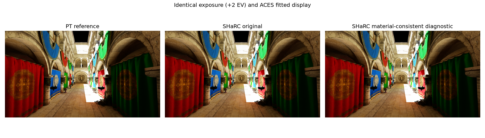
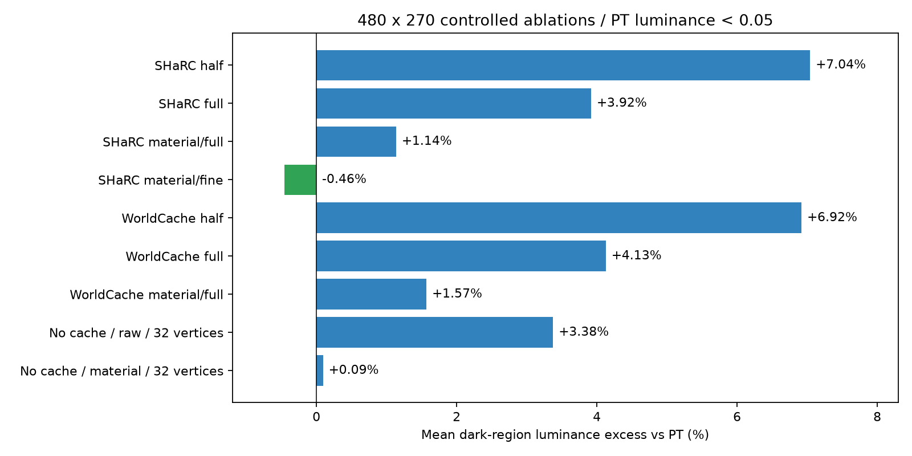

结论：WorldCache / SHaRC 的暗部偏亮由材质法线处理不一致、空间缓存近似和半分辨率 FG 重建共同产生。不是曝光不同或单一 π / albedo 倍率错误；也不能概括成所有 GI 方案都整体偏亮。
RTXGIDDGI.rt.slang 的 evaluateBRDFCosine(diffuseOnly=true) 使用 albedo × max(dot(sd.frame.N,L),0)/π。PBRTDiffuseMaterial.setupMaterialInstance 的输入 sd 是 const，法线贴图、翻转与修正只写入实例自己的 sf，并没有更新 sd.frame.N。LumenWorldCacheTrace 与 SharcTrace 又围绕 sd.frame.N 生成后续漫反射方向。因此这些路径使用了与 PT 不同的 BRDF 法线，并绕过部分材质半球有效性检查。SponzaLambert.pyscene 明确保留了法线贴图。
诊断修正：纯 Lambert 实验中 diffuseOnly 分支改用 material.eval，后续余弦采样改用 properties.guideNormal。严格无缓存对照进一步使用 material.sample 的方向与 weight，统一 32 个路径顶点、取消 1% throughput 截断与 RR，排除原 SHaRC 8 顶点上限的影响。严格原材质路径的暗部 +3.376% 降至严格材质一致路径的 +0.094%；后者全图 −0.007%。这不是生产环境下对复杂材质的完整修复：正式实现仍需明确限制 diffuse lobe，不能把完整镜面 BRDF 无条件写进漫反射缓存。
同一缓存方案切换 half/full FG：SHaRC 暗部 +7.043% → +3.918%；WorldCache +6.920% → +4.128%。重建只按深度、法线和屏幕距离加权，不能辨别同一平面上的间接光明暗边界，因而会混入邻近较亮的样本。此测试改变了 FG 分辨率，缓存更新配置不变。
保持 full FG 并统一材质后，SHaRC 剩余 +1.137%、WorldCache +1.570%。将 SHaRC sceneScale 20 → 60 细化格子后为 −0.456%。细化同时改变命中率与短射线回退策略，因此这证明缓存/回退组合对残差有影响，不能把所有变化单独归结为某一种“漏光”。
双方关闭法线贴图后，对各自匹配的无贴图 PT 比较，原 SHaRC / WorldCache 暗部偏差为 +0.825% / +0.995%，支持法线不一致的定位。另一方面，统一材质但保留 8 顶点与低贡献截断、完全绕过缓存时是 −3.389%；截断造成偏暗，会与其他偏亮误差抵消。取消缓存不能自动成为公平 PT 对照。
统一场景、相机、Lambert 材质、方向光 50；线性 HDR 数据在任何曝光和 ToneMapper 之前比较。暗部固定定义为 PT luminance < 0.05 且 GBuffer 法线有效。百分比为区域平均亮度比值，不是逐像素相对误差的平均；MSE 是可见表面 HDR RGB。旧 WorldCache/SHaRC 对照为 8192 帧预热＋16384 帧累积，当前重跑为 4096 帧预热＋8192 帧累积，PT 65536 spp。当前 SHaRC 原版 +5.285% 与旧版 +5.284% 重现一致。
| 实验 | 全图平均亮度偏差 | 暗部平均亮度偏差 | MSE |
|---|---|---|---|
| 1080-sharc-material-8192 | -0.119% | +2.491% | 7.5049771e-05 |
| 1080-sharc-original-8192 | +0.379% | +5.285% | 7.5780023e-05 |
| 1080-wc-material-8192 | +0.113% | +3.981% | 0.00010523306 |
| sharc-16384 | +0.378% | +5.284% | 7.5553609e-05 |
| worldcache-16384 | +0.560% | +6.790% | 0.00010586503 |
材质一致诊断使 SHaRC 暗部 +5.285% → +2.491%，WorldCache +6.790% → +3.981%。区域亮度改善不等于所有像素或所有指标都同比改善；MSE 仍受重建和空间近似影响。

PT 为 8192 spp；GI 2048 帧预热＋4096 帧累积，并保留 512/1024/2048 帧检查点。固定中心采样、关闭动画、ReSTIR/RTXDI/NRD、统一 primary shading normal correction。fine 是 scale=60，其余 scale=20。noNormals 使用单独的无贴图 PT 参考。所有 GPU 实验串行运行。

| 实验 | 全图偏差 | 暗部偏差 | MSE |
|---|---|---|---|
| ddgi-half-4096 | -0.336% | -0.056% | 0.00016624111 |
| ddgi-material-4096 | -0.435% | -0.840% | 0.00016654406 |
| sharc-full-4096 | +0.395% | +3.918% | 1.8158285e-05 |
| sharc-half-4096 | +0.428% | +7.043% | 0.00017325493 |
| sharc-material-4096 | -0.119% | +1.137% | 1.2723564e-05 |
| sharc-material-fine-4096 | -0.170% | -0.456% | 1.05248e-05 |
| sharc-noNormals-4096 | -0.071% | +0.825% | 1.6757545e-05 |
| uncached-material-4096 | -0.338% | -3.389% | 1.0880402e-05 |
| uncached-raw-4096 | +0.101% | -0.712% | 1.7422124e-05 |
| uncached-strict-4096 | -0.007% | +0.094% | 9.9824847e-06 |
| uncached-strict-raw-4096 | +0.506% | +3.376% | 1.8416926e-05 |
| wc-full-4096 | +0.280% | +4.128% | 5.808859e-05 |
| wc-half-4096 | +0.317% | +6.920% | 0.00019147445 |
| wc-material-4096 | -0.131% | +1.570% | 5.7209716e-05 |
| wc-noNormals-4096 | -0.191% | +0.995% | 6.2528386e-05 |
额外检查 DDGI＋half FG（官方 Sponza 22³ probe 网格）：原路径暗部 −0.056%，统一材质诊断后 −0.840%。因此当前证据不支持“所有 GI 都偏亮”。共享函数存在相同材质处理差异，但 probe 近似与其他误差会改变其最终符号；本轮没有把该诊断版本直接替换为默认渲染器。
渲染器源码及默认选项没有改变。诊断只临时修改 Release 输出目录中的 shader 副本，每组结束后恢复。光栅化与 multi-view 默认仍关闭。脚本要求先构建 Release Mogwai/RTXGIDDGI，准备项目的 Sponza 资源；复现期间不要同时运行其他 Mogwai 或重新构建 shader。
python -m pip install -r docs/2026-11-23_GI-brightness-audit/requirements.txt python docs/2026-11-23_GI-brightness-audit/reproduce.py --case pt --case uncached-strict-raw --case uncached-strict python docs/2026-11-23_GI-brightness-audit/analyze.py # 原分辨率参考与对照（PT 65536 spp 耗时较长） python docs/2026-11-23_GI-brightness-audit/reproduce.py --case 1080-pt --case 1080-sharc-original --case 1080-sharc-material --case 1080-wc-material python docs/2026-11-23_GI-brightness-audit/analyze1080.py
结果写入 build/brightness-audit；分析脚本优先使用本次生成的 1080p PT，否则使用原有高采样参考。此报告保存已整理的数据与显示图，原始 EXR 留在本机 build 目录，可由脚本重新生成。